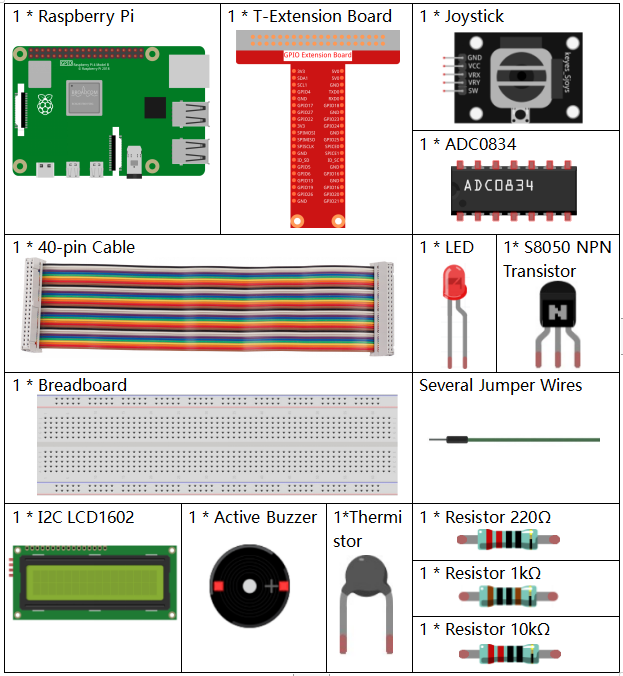

Note
Hello, welcome to the SunFounder Raspberry Pi & Arduino & ESP32 Enthusiasts Community on Facebook! Dive deeper into Raspberry Pi, Arduino, and ESP32 with fellow enthusiasts.
Why Join?
Expert Support: Solve post-sale issues and technical challenges with help from our community and team.
Learn & Share: Exchange tips and tutorials to enhance your skills.
Exclusive Previews: Get early access to new product announcements and sneak peeks.
Special Discounts: Enjoy exclusive discounts on our newest products.
Festive Promotions and Giveaways: Take part in giveaways and holiday promotions.
👉 Ready to explore and create with us? Click [here] and join today!
3.1.8 Overheat Monitor
Introduction
You may want to make an overheat monitoring device that applies to various situations, ex., in the factory, if we want to have an alarm and the timely automatic turning off of the machine when there is a circuit overheating. In this project, we will use thermistor, joystick, buzzer, LED and LCD to make an smart temperature monitoring device whose threshold is adjustable.
Required Components
In this project, we need the following components.
{kind=link}
Schematic Diagram
T-Board Name |
physical |
wiringPi |
BCM |
GPIO17 |
Pin 11 |
0 |
17 |
GPIO18 |
Pin 12 |
1 |
18 |
GPIO27 |
Pin 13 |
2 |
27 |
GPIO22 |
Pin15 |
3 |
22 |
GPIO23 |
Pin16 |
4 |
23 |
GPIO24 |
Pin18 |
5 |
24 |
SDA1 |
Pin 3 |
||
SCL1 |
Pin 5 |

Experimental Procedures
Step 1: Build the circuit.

Step 2: Go to the folder of the code.
cd ~/raphael-kit/python-pi5
Step 3: Run the executable file.
sudo python3 3.1.8_OverheatMonitor.py
As the code runs, the current temperature and the high-temperature threshold 40 are displayed on I2C LCD1602. If the current temperature is larger than the threshold, the buzzer and LED are started to alarm you.
Joystick here is for your pressing to adjust the high-temperature threshold. Toggling the Joystick in the direction of X-axis and Y-axis can adjust (turn up or down) the current high-temperature threshold. Press the Joystick once again to reset the threshold to initial value.
Note
If you get the error
FileNotFoundError: [Errno 2] No such file or directory: '/dev/i2c-1', you need to refer to I2C Configuration to enable the I2C.If you get
ModuleNotFoundError: No module named 'smbus2'error, please runsudo pip3 install smbus2.If the error
OSError: [Errno 121] Remote I/O errorappears, it means the module is miswired or the module is broken.If the code and wiring are fine, but the LCD still does not display content, you can turn the potentiometer on the back to increase the contrast.
Warning
If there is an error prompt RuntimeError: Cannot determine SOC peripheral base address, please refer to If gpiozero doesn’t work.
Code
Note
You can Modify/Reset/Copy/Run/Stop the code below. But before that, you need to go to source code path like raphael-kit/python. After modifying the code, you can run it directly to see the effect.
#!/usr/bin/env python3
import LCD1602
from gpiozero import LED, Buzzer, Button
import ADC0834
import time
import math
# Initialize joystick button, buzzer, and LED
Joy_BtnPin = Button(22)
buzzPin = Buzzer(23)
ledPin = LED(24)
# Set initial upper temperature threshold
upperTem = 40
# Setup ADC and LCD modules
ADC0834.setup()
LCD1602.init(0x27, 1)
def get_joystick_value():
"""
Reads the joystick values and returns a change value based on the joystick's position.
"""
x_val = ADC0834.getResult(1)
y_val = ADC0834.getResult(2)
if x_val > 200:
return 1
elif x_val < 50:
return -1
elif y_val > 200:
return -10
elif y_val < 50:
return 10
else:
return 0
def upper_tem_setting():
"""
Adjusts and displays the upper temperature threshold on the LCD.
"""
global upperTem
LCD1602.write(0, 0, 'Upper Adjust: ')
change = int(get_joystick_value())
upperTem += change
strUpperTem = str(upperTem)
LCD1602.write(0, 1, strUpperTem)
LCD1602.write(len(strUpperTem), 1, ' ')
time.sleep(0.1)
def temperature():
"""
Reads the current temperature from the sensor and returns it in Celsius.
"""
analogVal = ADC0834.getResult()
Vr = 5 * float(analogVal) / 255
Rt = 10000 * Vr / (5 - Vr)
temp = 1 / (((math.log(Rt / 10000)) / 3950) + (1 / (273.15 + 25)))
Cel = temp - 273.15
return round(Cel, 2)
def monitoring_temp():
"""
Monitors and displays the current temperature and upper temperature threshold.
Activates buzzer and LED if the temperature exceeds the upper limit.
"""
global upperTem
Cel = temperature()
LCD1602.write(0, 0, 'Temp: ')
LCD1602.write(0, 1, 'Upper: ')
LCD1602.write(6, 0, str(Cel))
LCD1602.write(7, 1, str(upperTem))
time.sleep(0.1)
if Cel >= upperTem:
buzzPin.on()
ledPin.on()
else:
buzzPin.off()
ledPin.off()
# Main execution loop
try:
lastState = 1
stage = 0
while True:
currentState = Joy_BtnPin.value
# Toggle between settings and monitoring mode
if currentState == 1 and lastState == 0:
stage = (stage + 1) % 2
time.sleep(0.1)
LCD1602.clear()
lastState = currentState
if stage == 1:
upper_tem_setting()
else:
monitoring_temp()
except KeyboardInterrupt:
# Clean up and exit
LCD1602.clear()
ADC0834.destroy()
Code Explanation
This section imports necessary libraries for the project.
LCD1602is for the LCD display,gpiozeroprovides classes for LED, Buzzer, and Button,ADC0834is for analog-to-digital conversion, andtimeandmathare Python standard libraries for time-related functions and mathematical operations, respectively.#!/usr/bin/env python3 import LCD1602 from gpiozero import LED, Buzzer, Button import ADC0834 import time import math
Here, the joystick button, buzzer, and LED are initialized.
Button(22)creates a button object connected to GPIO pin 22.Buzzer(23)andLED(24)initialize the buzzer and LED to GPIO pins 23 and 24, respectively.# Initialize joystick button, buzzer, and LED Joy_BtnPin = Button(22) buzzPin = Buzzer(23) ledPin = LED(24)
Sets the initial upper temperature limit and initializes the ADC and LCD modules. The LCD is initialized with an address (
0x27) and a mode (1).# Set initial upper temperature threshold upperTem = 40 # Setup ADC and LCD modules ADC0834.setup() LCD1602.init(0x27, 1)
This function reads the joystick’s X and Y values using ADC0834. It returns a change value based on the joystick’s position, which will be used to adjust the temperature threshold.
def get_joystick_value(): """ Reads the joystick values and returns a change value based on the joystick's position. """ x_val = ADC0834.getResult(1) y_val = ADC0834.getResult(2) if x_val > 200: return 1 elif x_val < 50: return -1 elif y_val > 200: return -10 elif y_val < 50: return 10 else: return 0
Adjusts the upper temperature limit using the joystick input. The new limit is displayed on the LCD.
def upper_tem_setting(): """ Adjusts and displays the upper temperature threshold on the LCD. """ global upperTem LCD1602.write(0, 0, 'Upper Adjust: ') change = int(get_joystick_value()) upperTem += change strUpperTem = str(upperTem) LCD1602.write(0, 1, strUpperTem) LCD1602.write(len(strUpperTem), 1, ' ') time.sleep(0.1)
Reads the current temperature from the sensor using ADC0834 and converts it to Celsius.
def temperature(): """ Reads the current temperature from the sensor and returns it in Celsius. """ analogVal = ADC0834.getResult() Vr = 5 * float(analogVal) / 255 Rt = 10000 * Vr / (5 - Vr) temp = 1 / (((math.log(Rt / 10000)) / 3950) + (1 / (273.15 + 25))) Cel = temp - 273.15 return round(Cel, 2)
Monitors and displays the current temperature and upper limit. If the temperature exceeds the upper limit, the buzzer and LED are activated.
def monitoring_temp(): """ Monitors and displays the current temperature and upper temperature threshold. Activates buzzer and LED if the temperature exceeds the upper limit. """ global upperTem Cel = temperature() LCD1602.write(0, 0, 'Temp: ') LCD1602.write(0, 1, 'Upper: ') LCD1602.write(6, 0, str(Cel)) LCD1602.write(7, 1, str(upperTem)) time.sleep(0.1) if Cel >= upperTem: buzzPin.on() ledPin.on() else: buzzPin.off() ledPin.off()
The main execution loop toggles between setting and monitoring modes based on joystick button presses. It continuously updates either the temperature setting or monitors the current temperature.
# Main execution loop try: lastState = 1 stage = 0 while True: currentState = Joy_BtnPin.value # Toggle between settings and monitoring mode if currentState == 1 and lastState == 0: stage = (stage + 1) % 2 time.sleep(0.1) LCD1602.clear() lastState = currentState if stage == 1: upper_tem_setting() else: monitoring_temp()
This section ensures proper cleanup and resource release when the program is interrupted.
except KeyboardInterrupt: # Clean up and exit LCD1602.clear() ADC0834.destroy()